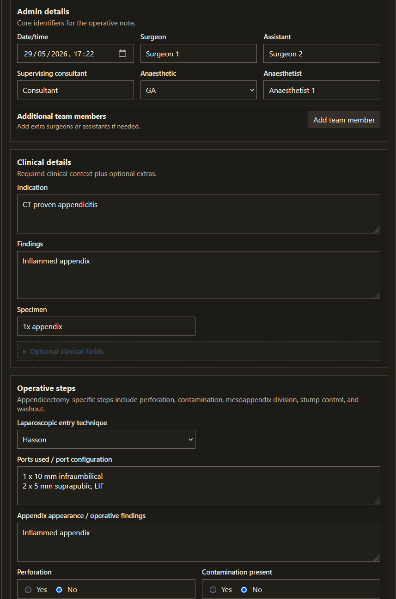

What it is
A browser form for turning operation details into a draft note. Check it, edit it, then copy it into the clinical record yourself.
Draft common general surgery operation notes from a short form. I started it to avoid missing repetitive fields. The page has no account, backend, analytics or autosave.
A browser form for turning operation details into a draft note. Check it, edit it, then copy it into the clinical record yourself.
Operation notes are repetitive, but the omissions still matter. The form keeps the usual fields and procedure prompts in one place.
Personal prototype. Narrow on purpose. It covers a few common general surgery cases, not every operation in theatre.
Example
These screenshots use synthetic details. The tool does not store, transmit or check the clinical truth of anything entered.

Procedure: Laparoscopic appendicectomy Date/time: 29/05/2026, 10:52 Findings: Pus, inflamed appendix Operation: Laparoscopic entry method: Hasson Perforation: yes Contamination: none Mesoappendix division: Electrocautery Stump control: Endoloops Washout performed: yes Haemostasis confirmed: yes Specimen: 1x appendix Drain: Right iliac fossa Post-operative plan: 1) Return to ward 2) Continue antibiotics
The generated text is deliberately plain so it can be checked and edited before use.
Prototype
Clinical safety boundary
This is a personal tool for drafting text from information entered by a clinician. It is not an EHR, referral platform, NHS-approved product, clinical safety system, regulated medical device or source of truth.
Do not send patient-identifiable information to this website or repository. Check and correct the draft before entering it into the clinical record.